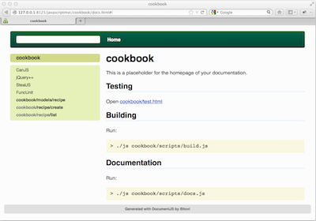
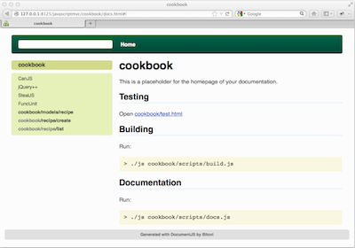

Documentation is a critical step in creating maintainable code.
It's often burdensome on developers and
becomes neglected. JavaScriptMVC's integrates DocumentJS to make
it easy to document your code.
Generating Documentation
Create the docs by running:
> ./js cookbook/scripts/docs.js
Viewing Documentation
Open cookbook/docs/index.html and you'll find something like:

Writing Documentation
The generated app comes with very minimal docs. But, it
gives you a great place to
start. Open cookbook/cookbook.md. This is the top level
page for the cookbook application. Notice that it's markdown!
The syntax for documentation is very similar to JavaDoc. However, there are some
important differences. Consult the DocumentJS's documentation
for more information.
Next steps
In the context of this trivial application, you've
been exposed to major features of JavaScriptMVC:
code separation
testing
building
documentation
This is pretty cool! Look at how simply you went from
nothing to a compressed, tested, and documented application.
Documentation is a critical step in creating maintainable code. It's often burdensome on developers and becomes neglected. JavaScriptMVC's integrates DocumentJS to make it easy to document your code.
Generating Documentation
Create the docs by running:
Viewing Documentation
Open cookbook/docs/index.html and you'll find something like:

Writing Documentation
The generated app comes with very minimal docs. But, it gives you a great place to start. Open cookbook/cookbook.md. This is the top level page for the cookbook application. Notice that it's markdown!
The syntax for documentation is very similar to JavaDoc. However, there are some important differences. Consult the DocumentJS's documentation for more information.
Next steps
In the context of this trivial application, you've been exposed to major features of JavaScriptMVC:
This is pretty cool! Look at how simply you went from nothing to a compressed, tested, and documented application.